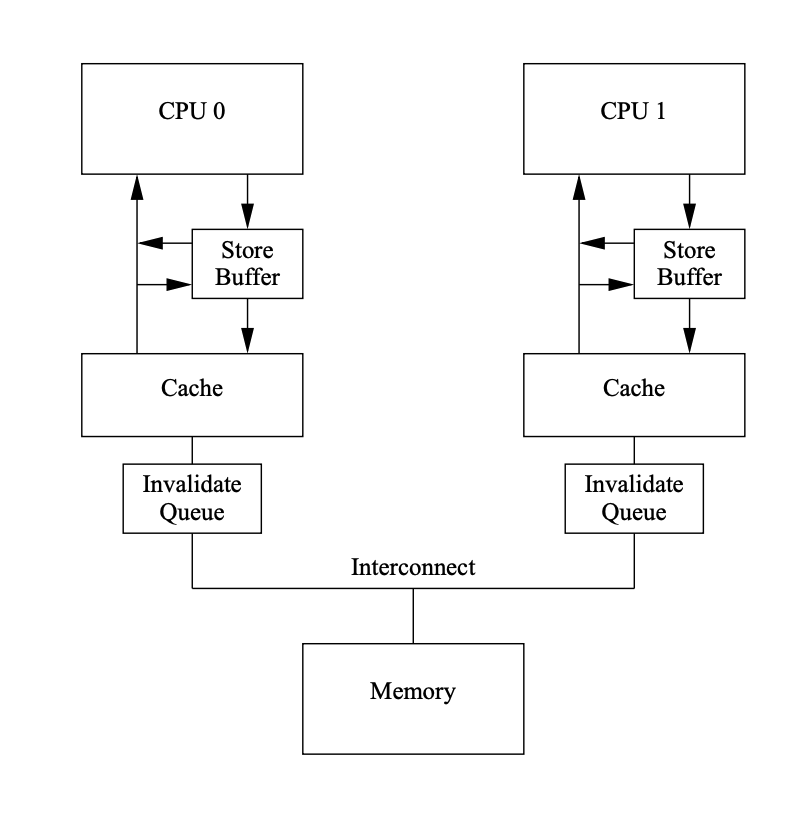

current = remove_min(queue); // pick client with minimum pass
schedule(current); // use resource for quantum
current->pass += current->stride; // compute next pass using stride
insert(queue, current); // put back into the queue
struct malloc_state {
/* The maximum chunk size to be eligible for fastbin */
INTERNAL_SIZE_T max_fast; /* low 2 bits used as flags */
/* Fastbins */
mfastbinptr fastbins[NFASTBINS];
/* Base of the topmost chunk -- not otherwise kept in a bin */
mchunkptr top;
/* The remainder from the most recent split of a small request */
mchunkptr last_remainder;
/* Normal bins packed as described above */
mchunkptr bins[NBINS * 2];
/* Bitmap of bins */
unsigned int binmap[BINMAPSIZE];
/* Tunable parameters */
unsigned long trim_threshold;
INTERNAL_SIZE_T top_pad;
INTERNAL_SIZE_T mmap_threshold;
/* Memory map support */
int n_mmaps;
int n_mmaps_max;
int max_n_mmaps;
/* Cache malloc_getpagesize */
unsigned int pagesize;
/* Statistics */
INTERNAL_SIZE_T mmapped_mem;
INTERNAL_SIZE_T sbrked_mem;
INTERNAL_SIZE_T max_sbrked_mem;
INTERNAL_SIZE_T max_mmapped_mem;
INTERNAL_SIZE_T max_total_mem;
};
bin 分为 fast bin (包含最近释放的小块, 使用更快的单链表, 使用更快的 LIFO, 相邻的 free chunk 不合并), unsorted bin (来自块拆分的剩余部分, 提供一次在分箱前使用的机会), small bin 和 large bin
chunk 分为 allocated chunk, free chunk, top chunk (也称 wilderness) 和 last remainder chunk
Allocated chunk:
prev_size: If the previous chunk is free, this field contains the size of previous chunk. Else if previous chunk is allocated, this field contains previous chunk’s user data.
size: This field contains the size of this allocated chunk. Last 3 bits of this field contains flag information.
PREV_INUSE (P) – This bit is set when previous chunk is allocated.
IS_MMAPPED (M) – This bit is set when chunk is mmap’d.
NON_MAIN_ARENA (N) – This bit is set when this chunk belongs to a thread arena.
Free chunk:
prev_size: No two free chunks can be adjacent together. When both the chunks are free, its gets combined into one single free chunk. Hence always previous chunk to this freed chunk would be allocated and therefore prev_size contains previous chunk’s user data.
size: This field contains the size of this free chunk.
fd: Forward pointer – Points to next chunk in the same bin (and NOT to the next chunk present in physical memory).
bk: Backward pointer – Points to previous chunk in the same bin (and NOT to the previous chunk present in physical memory).
Top chunk: Chunk which is at the top border of an arena is called top chunk. It doesnt belong to any bin.
Last Remainder chunk: Last remainder chunk helps to improve locality of reference ie) consecutive malloc request of small chunks might end up being allocated close to each other.
#include <stdio.h>
int fileno(FILE *stream);
FILE *fopen(const char *path, const char *mode);
int fclose(FILE *fp);
int fflush(FILE *stream);
int fseek(FILE *stream, long offset, int whence);
void rewind(FILE *stream); /* equivalent to (void) fseek(stream, 0L, SEEK_SET) */
输入
getc(3) 可能使用宏来实现, 而 fgetc(3) 只可能是函数
int getc(FILE *stream);
int fgetc(FILE *stream);
int getchar(void); /* equivalent to getc(stdin) */
char *fgets(char *s, int size, FILE *stream); /* A terminating null byte ('\0') is stored after the last character in the buffer */
size_t fread(void *ptr, size_t size, size_t nmemb, FILE *stream);
使用 ferror(3) 和 feof(3) 判断是出错还是到达文件尾端
int ferror(FILE *stream);
int feof(FILE *stream);
void clearerr(FILE *stream);
输出
putc(3) 可能使用宏来实现, 而 fputc(3) 只可能是函数
int putc(int c, FILE *stream);
int fputc(int c, FILE *stream);
int putchar(int c); /* equivalent to putc(stdout) */
int fputs(const char *s, FILE *stream);
size_t fwrite(const void *ptr, size_t size, size_t nmemb, FILE *stream);
int CompareAndSwap(int *ptr, int expected, int newval) {
int actual = *ptr;
if (actual == expected)
*ptr = newval;
return actual;
}
typedef struct __lock_t {
int flag;
} lock_t;
void init(lock_t *lock) {
// 0 indicates that lock is available, 1 that it is held
lock->flag = 0;
}
void lock(lock_t *lock) {
while (CompareAndSwap(&lock->flag, 0, 1) == 1)
; // spin-wait (do nothing)
}
void unlock(lock_t *lock) {
lock->flag = 0;
}
char compare_and_swap(int *ptr, int oldval, int newval) {
unsigned char ret;
// Note that sete sets a ’byte’ not the word
__asm__ __volatile__ (
" lock\n"
" cmpxchgl %2,%1\n"
" sete %0\n"
: "=q" (ret), "=m" (*ptr)
: "r" (newval), "m" (*ptr), "a" (oldval)
: "memory");
return ret;
}
CAS 保证了 correctness, 但没有实现 fairness, 可能导致某个线程等待了很久一直没有抢到锁
6.1.2 fetch and add
int FetchAndAdd(int *ptr) {
int old = *ptr;
*ptr = old + 1;
return old;
}
typedef struct lock_t {
int ticket;
int turn;
} lock_t;
void lock_init(lock_t *lock) {
lock->ticket = 0;
lock->turn = 0;
}
void lock(lock_t *lock) {
int myturn = FetchAndAdd(&lock->ticket);
while (lock->turn != myturn)
; // spin
}
void unlock(lock_t *lock) {
FetchAndAdd(&lock->turn);
}
但有两个问题, 一是当 turn 的值没有变化时仍会不断地自旋检查, 二是当值变化时, CPU cache 中的值会放入 invalidate queue (MESI protocol), 但只有获取锁的 CPU 的这步操作有意义
6.1.3 solaris 使用 park 睡眠在队列上代替自旋
int TestAndSet(int *old_ptr, int newval) {
int old = *old_ptr; // fetch old value at old_ptr
*old_ptr = newval; // store 'newval' into old_ptr
return old; // return the old value
}
typedef struct lock_t {
int flag;
int guard;
queue_t *q;
} lock_t;
void lock_init(lock_t *m) {
m->flag = 0;
m->guard = 0;
queue_init(m->q);
}
void lock(lock_t *m) {
while (TestAndSet(&m->guard, 1) == 1)
; //acquire guard lock by spinning
if (m->flag == 0) {
m->flag = 1; // lock is acquired
m->guard = 0;
} else {
queue_add(m->q, gettid());
setpark(); // avoid wakeup/waiting race
m->guard = 0;
park();
}
}
void unlock(lock_t *m) {
while (TestAndSet(&m->guard, 1) == 1)
; //acquire guard lock by spinning
if (queue_empty(m->q))
m->flag = 0; // let go of lock; no one wants it
else
unpark(queue_remove(m->q)); // hold lock (for next thread!)
m->guard = 0;
}
6.1.4 linux futex
void mutex_lock (int *mutex) {
int v;
/* Bit 31 was clear, we got the mutex (this is the fastpath) */
if (atomic_bit_test_set (mutex, 31) == 0)
return;
atomic_increment (mutex);
while (1) {
if (atomic_bit_test_set (mutex, 31) == 0) {
atomic_decrement (mutex);
return;
}
/* We have to wait now. First make sure the futex value
we are monitoring is truly negative (i.e. locked). */
v = *mutex;
if (v >= 0)
continue;
futex_wait (mutex, v);
}
}
void mutex_unlock (int *mutex) {
/* Adding 0x80000000 to the counter results in 0 if and only if
there are not other interested threads */
if (atomic_add_zero (mutex, 0x80000000))
return;
/* There are other threads waiting for this mutex,
wake one of them up. */
futex_wake (mutex);
}
6.1.5 mcs spinlock
为了避免缓存一致性带来的开销, mcs spinlock 在 ticket spinlock 的基础上让每个 CPU 去检查自己的各自的变量
struct mcs_spinlock {
struct mcs_spinlock *next;
int locked; /* 1 if lock acquired */
int count; /* nesting count, see qspinlock.c */
};
static inline
void mcs_spin_lock(struct mcs_spinlock **lock, struct mcs_spinlock *node)
{
struct mcs_spinlock *prev;
/* Init node */
node->locked = 0;
node->next = NULL;
prev = xchg(lock, node);
if (likely(prev == NULL)) {
return;
}
WRITE_ONCE(prev->next, node);
/* Wait until the lock holder passes the lock down. */
arch_mcs_spin_lock_contended(&node->locked);
}
static inline
void mcs_spin_unlock(struct mcs_spinlock **lock, struct mcs_spinlock *node)
{
struct mcs_spinlock *next = READ_ONCE(node->next);
if (likely(!next)) {
/*
* Release the lock by setting it to NULL
*/
if (likely(cmpxchg_release(lock, node, NULL) == node))
return;
/* Wait until the next pointer is set */
while (!(next = READ_ONCE(node->next)))
cpu_relax();
}
/* Pass lock to next waiter. */
arch_mcs_spin_unlock_contended(&next->locked);
}
7 Parallelism
7.1 consistency
memory consistency
sequential consistency: overall effect consistent with each individual thread, arbitrary interleaving between threads
non-coherent cache senario: may violate sequential consistency
snoopy caches: tagged cahce line in main memory with its state (shared, exclusive), snoopy caches will get the correct copy of other threads' cache
缓存一致性协议下的 CPU 缓存如图所示:

Figure 12: Cache (source: Memory Barriers: a Hardware View for Software Hackers, Paul E. McKenney)
cpu foo 因为写内存屏障 sfence (store barrier) 将 store buffer 中的 a 刷入 cache line
cpu foo 将 b 移入 cache line
cpu bar 因为读内存屏障 lfence (load barrier) 将 invalidate queue 中的 a 清理
7.2 懒惰计数器 (sloppy counter)
懒惰计数器通过多个局部计数器和一个全局计数器来实现一个逻辑计数器, 局部计数器的值超过一个阈值 S (sloppiness) 时就把局部值转移到全局计数器, 局部计数器清零
每个 CPU 有自己的局部计数器, 不同 CPU 上的线程不会竞争
typedef struct counter_t {
int global; // global count
pthread_mutex_t glock; // global lock
int local[NUMCPUS]; // local count (per cpu)
pthread_mutex_t llock[NUMCPUS]; // ... and locks
int threshold; // update frequency
} counter_t;
// init: record threshold, init locks, init values
// of all local counts and global count
void init(counter_t *c, int threshold) {
c->threshold = threshold;
c->global = 0;
pthread_mutex_init(&c->glock, NULL);
int i;
for (i = 0; i < NUMCPUS; i++) {
c->local[i] = 0;
pthread_mutex_init(&c->llock[i], NULL);
}
}
// update: usually, just grab local lock and update local amount
// once local count has risen by 'threshold', grab global
// lock and transfer local values to it
void update(counter_t *c, int threadID, int amt) {
pthread_mutex_lock(&c->llock[threadID]);
c->local[threadID] += amt; // assumes amt > 0
if (c->local[threadID] >= c->threshold) { // transfer to global
pthread_mutex_lock(&c->glock);
c->global += c->local[threadID];
pthread_mutex_unlock(&c->glock);
c->local[threadID] = 0;
}
pthread_mutex_unlock(&c->llock[threadID]);
}
// get: just return global amount (which may not be perfect)
int get(counter_t *c) {
pthread_mutex_lock(&c->glock);
int val = c->global;
pthread_mutex_unlock(&c->glock);
return val; // only approximate!
}
While (STATUS == BUSY)
; // wait until device is not busy
Write data to DATA register
Write command to COMMAND register
(Doing so starts the device and executes the command)
While (STATUS == BUSY)
; // wait until device is done with your request
CPU 不需要不断轮询设备, 设备完成了自身操作, 会抛出一个硬件中断触发 interrupt handler
/* include/linux/socket.h
* struct sockaddr_storage address;
* msg.msg_name = (struct sockaddr *)&address;
*/
struct msghdr {
void *msg_name; /* ptr to socket address structure */
int msg_namelen; /* size of socket address structure */
struct iov_iter msg_iter; /* data */
/*
* Ancillary data. msg_control_user is the user buffer used for the
* recv* side when msg_control_is_user is set, msg_control is the kernel
* buffer used for all other cases.
*/
union {
void *msg_control;
void __user *msg_control_user;
};
bool msg_control_is_user : 1;
__kernel_size_t msg_controllen; /* ancillary data buffer length */
unsigned int msg_flags; /* flags on received message */
struct kiocb *msg_iocb; /* ptr to iocb for async requests */
};
sock_sendmsg
/* net/socket.c */
static inline int sock_sendmsg_nosec(struct socket *sock, struct msghdr *msg)
{
int ret = INDIRECT_CALL_INET(sock->ops->sendmsg, inet6_sendmsg,
inet_sendmsg, sock, msg,
msg_data_left(msg));
BUG_ON(ret == -EIOCBQUEUED);
return ret;
}
/* net/ipv4/tcp.c */
int tcp_sendmsg(struct sock *sk, struct msghdr *msg, size_t size)
{
int ret;
lock_sock(sk);
ret = tcp_sendmsg_locked(sk, msg, size);
release_sock(sk);
return ret;
}
socket_lock_t
/* include/net/sock.h
* This is the per-socket lock. The spinlock provides a synchronization
* between user contexts and software interrupt processing, whereas the
* mini-semaphore synchronizes multiple users amongst themselves.
*/
typedef struct {
spinlock_t slock;
int owned;
wait_queue_head_t wq;
/*
* We express the mutex-alike socket_lock semantics
* to the lock validator by explicitly managing
* the slock as a lock variant (in addition to
* the slock itself):
*/
#ifdef CONFIG_DEBUG_LOCK_ALLOC
struct lockdep_map dep_map;
#endif
} socket_lock_t;
/* net/ipv4/tcp_output.c */
static bool tcp_write_xmit(struct sock *sk, unsigned int mss_now, int nonagle,
int push_one, gfp_t gfp);
static int tcp_transmit_skb(struct sock *sk, struct sk_buff *skb,
int clone_it, gfp_t gfp_mask, u32 rcv_nxt);
/* pass the packet down to IP */
err = icsk->icsk_af_ops->queue_xmit(sk, skb, &inet->cork.fl);